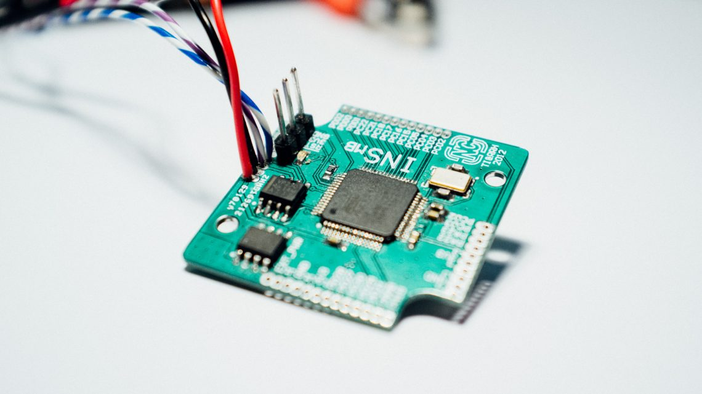

High-Precision Position Tracking via GPS and IMU
Senior Design Project
Project Description
Synthetic aperture radar (SAR) imaging requires accurate position information on the order of a fraction of a wavelength. At millimeter wave frequencies, the wavelength is on the order of single digit millimeters. Performing SAR imaging at these frequencies, in particular using small drones, requires position accuracies on the order of 0.1 mm or smaller. The goal of the project is to design a system relying on a combination of GPS and IMUs to track a position of the radar sensor (for example when placed on a drone) with such high accuracy.
My Role
My experience in circuit design and PCB layout will be utilized to help develop the hardware aspect of the project. The final product will need to be a small PCB containing a GPS module, antenna, IMU, and the other necessary components that can be mounted to a drone.
Skills and Knowledge Gained
Though this project is still in early development, I've already learned about topics such as sensor fusion, signal processing, and GNSS technology.
Big Picture Contribution
There is no one specific purpose this project will have. High precision tracking systems have a wide range of applications from autonomous vehicle navigation to precision agriculture and beyond. Our objective is to develop an affordable yet versatile solution with the best accuracy we can achieve.